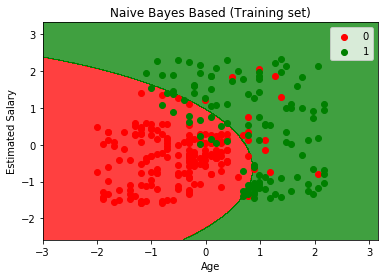
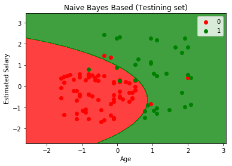

Python 3.7.1 (default, Dec 10 2018, 22:54:23) [MSC v.1915 64 bit (AMD64)]
Type "copyright", "credits" or "license" for more information.
IPython 7.2.0 -- An enhanced Interactive Python.
In [1]: import numpy as np
...: import matplotlib.pyplot as plt
...: import pandas as pd
...:
...:
...: #import the dataset
...: dataset = pd.read_csv('ads_v.csv')
...: X=dataset.iloc[:,[2,3]].values
...: y=dataset.iloc[:,-1].values
...:
...: #clean data
...: #encode data
...: #preprocess
...:
...: #split the dataset
...: from sklearn.model_selection import train_test_split
...: X_train,X_test,y_train,y_test = train_test_split(X,y,test_size=0.25,random_state=0)
...:
...: #go for feature scaling
...: from sklearn.preprocessing import StandardScaler
...: sc = StandardScaler()
...: X_train = sc.fit_transform(X_train)
...: X_test = sc.fit_transform(X_test)
...:
...: #Fit the Naive bayes classifier model to training set
...: from sklearn.naive_bayes import GaussianNB
...: classifier = GaussianNB()
...: classifier.fit(X_train,y_train)
...:
...: #predicting the test set results
...: y_pred = classifier.predict(X_test)
...:
...: #make confusion matrix
...: from sklearn.metrics import confusion_matrix
...: cm = confusion_matrix(y_test,y_pred)
C:\Users\RoKu\Anaconda3\lib\site-packages\sklearn\utils\validation.py:595: DataConversionWarning: Data with input dtype int64 was converted to float64 by StandardScaler.
warnings.warn(msg, DataConversionWarning)
C:\Users\RoKu\Anaconda3\lib\site-packages\sklearn\utils\validation.py:595: DataConversionWarning: Data with input dtype int64 was converted to float64 by StandardScaler.
warnings.warn(msg, DataConversionWarning)
C:\Users\RoKu\Anaconda3\lib\site-packages\sklearn\utils\validation.py:595: DataConversionWarning: Data with input dtype int64 was converted to float64 by StandardScaler.
warnings.warn(msg, DataConversionWarning)
C:\Users\RoKu\Anaconda3\lib\site-packages\sklearn\utils\validation.py:595: DataConversionWarning: Data with input dtype int64 was converted to float64 by StandardScaler.
warnings.warn(msg, DataConversionWarning)
In [2]: from matplotlib.colors import ListedColormap
...: X_set, y_set = X_train, y_train
...: X1, X2 = np.meshgrid(np.arange(start = X_set[:, 0].min() - 1, stop = X_set[:, 0].max() + 1, step = 0.01),
...: np.arange(start = X_set[:, 1].min() - 1, stop = X_set[:, 1].max() + 1, step = 0.01))
...: plt.contourf(X1, X2, classifier.predict(np.array([X1.ravel(), X2.ravel()]).T).reshape(X1.shape),
...: alpha = 0.75, cmap = ListedColormap(('red', 'green')))
...: plt.xlim(X1.min(), X1.max())
...: plt.ylim(X2.min(), X2.max())
...: for i, j in enumerate(np.unique(y_set)):
...: plt.scatter(X_set[y_set == j, 0], X_set[y_set == j, 1],
...: c = ListedColormap(('red', 'green'))(i), label = j)
...:
...: plt.title('Naive Bayes Based (Training set)')
...: plt.xlabel('Age')
...: plt.ylabel('Estimated Salary')
...: plt.legend()
...: plt.show()
'c' argument looks like a single numeric RGB or RGBA sequence, which should be avoided as value-mapping will have precedence in case its length matches with 'x' & 'y'. Please use a 2-D array with a single row if you really want to specify the same RGB or RGBA value for all points.
'c' argument looks like a single numeric RGB or RGBA sequence, which should be avoided as value-mapping will have precedence in case its length matches with 'x' & 'y'. Please use a 2-D array with a single row if you really want to specify the same RGB or RGBA value for all points.

In [3]: from matplotlib.colors import ListedColormap
...: X_set, y_set = X_test, y_test
...: X1, X2 = np.meshgrid(np.arange(start = X_set[:, 0].min() - 1, stop = X_set[:, 0].max() + 1, step = 0.01),
...: np.arange(start = X_set[:, 1].min() - 1, stop = X_set[:, 1].max() + 1, step = 0.01))
...: plt.contourf(X1, X2, classifier.predict(np.array([X1.ravel(), X2.ravel()]).T).reshape(X1.shape),
...: alpha = 0.75, cmap = ListedColormap(('red', 'green')))
...: plt.xlim(X1.min(), X1.max())
...: plt.ylim(X2.min(), X2.max())
...: for i, j in enumerate(np.unique(y_set)):
...: plt.scatter(X_set[y_set == j, 0], X_set[y_set == j, 1],
...: c = ListedColormap(('red', 'green'))(i), label = j)
...:
...: plt.title('Naive Bayes Based (Testining set)')
...: plt.xlabel('Age')
...: plt.ylabel('Estimated Salary')
...: plt.legend()
...: plt.show()
'c' argument looks like a single numeric RGB or RGBA sequence, which should be avoided as value-mapping will have precedence in case its length matches with 'x' & 'y'. Please use a 2-D array with a single row if you really want to specify the same RGB or RGBA value for all points.
'c' argument looks like a single numeric RGB or RGBA sequence, which should be avoided as value-mapping will have precedence in case its length matches with 'x' & 'y'. Please use a 2-D array with a single row if you really want to specify the same RGB or RGBA value for all points.

In [4]: tn, fp, fn, tp = confusion_matrix(y_test,y_pred)
Traceback (most recent call last):
File "<ipython-input-4-357ad1051ba0>", line 1, in <module>
tn, fp, fn, tp = confusion_matrix(y_test,y_pred)
ValueError: not enough values to unpack (expected 4, got 2)
In [5]:
In [5]: tn, fp, fn, tp = confusion_matrix(y_test,y_pred).ravel()
In [6]: tn, fp, fn, tp = confusion_matrix(y_test,y_pred).reshape(-1)
In [7]: